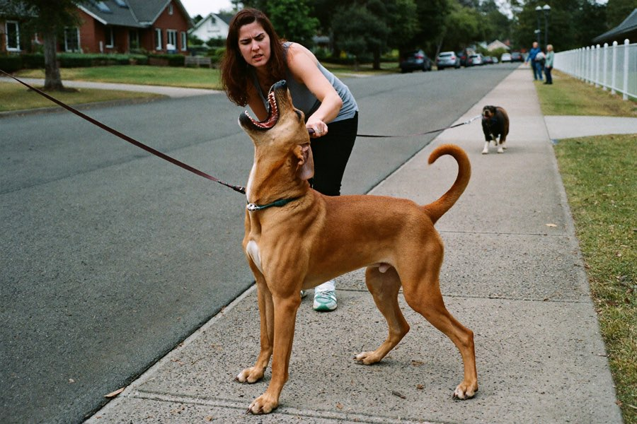
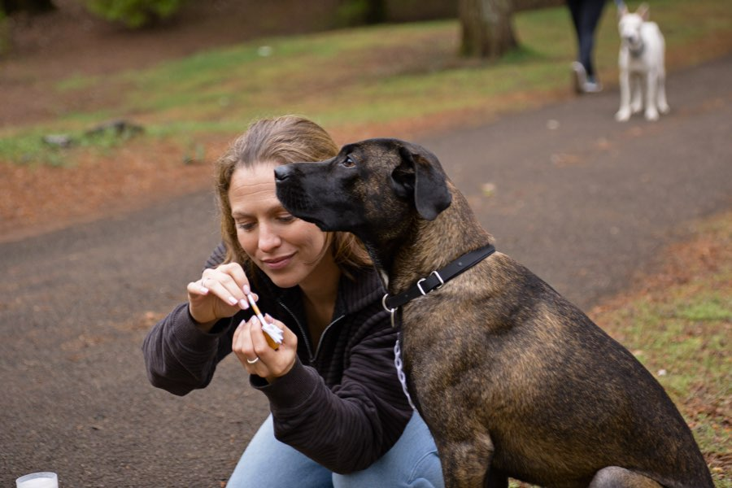

Perché il tuo cane „impazzisce" al guinzaglio, e il semplice trucco per cui ciclisti, corridori e altri cani smettono all'improvviso di interessargli
Per molti proprietari ogni passeggiata si trasforma in una lotta: appena compare un altro cane, non c'è più modo di gestirlo. Un'educatrice cinofila spiega perché la reattività del cane non ha nulla a che vedere con la disobbedienza, e cosa aiuta davvero.
 Autore: Lena Ricci · Redazione ZampaPlan · 2 giorni fa · 4 min di lettura
Autore: Lena Ricci · Redazione ZampaPlan · 2 giorni fa · 4 min di lettura
Ti suona familiare? La passeggiata è tranquilla, finché in fondo alla strada compare un altro cane. In pochi secondi il tuo cane cambia: tira, abbaia, si lancia al guinzaglio. Tu resisti, mormori „no, lascia, vieni qui", e ti senti impotente.
Forse questa sensazione la conosci fin troppo bene: pianifichi i percorsi in modo da non incontrare nessuno, per quanto possibile. Esci all'alba o solo a tarda sera. Eviti gli altri proprietari con un ampio giro, tiri via il cane nervosamente e senti quegli sguardi alle spalle. „Non riesce a tenere il suo cane?" Qualcuno lo dice persino ad alta voce.
E la cosa peggiore è che tu ami il tuo cane più di ogni cosa. In fondo vuoi solo che le passeggiate insieme tornino a essere ciò che erano un tempo, un bel momento in due, e non un percorso a ostacoli. Quella tensione costante, i sensi di colpa, la delusione dopo ogni tentativo fallito: tutto questo pesa. Su di te. E, che tu ci creda o no: anche sul tuo cane.
Non sei solo in questo, e il tuo cane non è „maleducato". Ciò che la maggior parte delle persone non sa: questo comportamento non è testardaggine, ma una reazione allo stress. Per questo i consigli soliti („sii deciso", „strattonalo") spesso non aiutano affatto, anzi, peggiorano le cose.
Perché „più disciplina" peggiora solo il problema
Quando il cane va in escandescenza agli incontri, il suo livello di stress è già alle stelle. In quello stato non è affatto in grado di „ascoltare", il suo cervello è in modalità allarme. Chi reagisce allora con uno strattone al guinzaglio non fa che confermarglielo: „altri cani = guai". Il comportamento si radica.

Il punto di svolta: lavorare non sul cane, ma sulla situazione
Gli educatori dietro ZampaPlan seguono un'altra strada. Invece di „correggere" il cane in stato di allerta, costruiscono le fondamenta prima: un segnale affidabile che riporta l'attenzione, e un addestramento graduale che parte esattamente là dove il tuo cane è ancora in grado di restare calmo.
E la cosa migliore è che non devi diventare un esperto cinofilo, pagare costose lezioni private o sfiancarti con ore di addestramento. Ti serve solo un piano chiaro, su misura per il tuo cane, e la consapevolezza che ogni piccolo progresso conta. Molti proprietari raccontano che già nei primi giorni qualcosa si sposta: il cane alza più spesso lo sguardo verso di loro, il guinzaglio resta più spesso morbido. E a ogni incrocio sereno torna qualcosa che mancava da tempo: la fiducia. Su entrambi i lati del guinzaglio.

Ecco come funziona l'addestramento, passo dopo passo
Come reagisce il tuo cane agli incontri?
Fai il test gratuito in 60 secondi e ricevi subito una valutazione su misura per il tuo cane.
INIZIA ORA IL TEST PER IL CANEGratuito · 60 secondi · risultato immediatoCosa dicono i proprietari

„Dopo tre settimane, per la prima volta da tanto, ho potuto passare accanto a un altro cane senza che Rocky impazzisse. Non avrei mai pensato che dipendesse da me, e non da lui."

„Il piano era spiegato così chiaramente che io e mia moglie facevamo esattamente la stessa cosa. Finalmente andiamo nella stessa direzione, e Balu lo percepisce."

„Ho 63 anni e sinceramente ero a un passo dal cedere il mio Cooper: avevo semplicemente smesso di uscire di casa. Oggi rifacciamo il nostro giro attorno al lago, del tutto tranquilli, anche con altri cani. Questo piano ci ha restituito a entrambi un pezzo di vita. Faccio ancora fatica a crederci."

Cosa rende ZampaPlan speciale
Il segreto non è un nuovo trucco miracoloso, ma un piano su misura esatta per il tuo cane. Rispondi ad alcune brevi domande su razza, età e comportamento, e da questo nasce un piano di addestramento personale. Settimana dopo settimana, con esercizi concreti, completamente al tuo ritmo, da casa.

- Su misura, non tutto uguale: adattato a razza, età e al problema specifico del tuo cane.
- Sviluppato da veri educatori cinofili, spiegato in modo comprensibile passo dopo passo.
- Un coach AI sempre a portata di mano: risponde alle tue domande a qualsiasi ora, anche alle dieci di sera.
- Pagamento una tantum invece di costose lezioni private, senza abbonamento vincolante.
Immagina per un attimo com'è: in fondo alla strada compare un cane, e tu per la prima volta non vai nel panico. Il tuo cane gli dà un'occhiata breve, poi guarda di nuovo te. E semplicemente proseguite. Niente sguardi, niente strappi, niente sensi di colpa. Solo voi due. Quel momento è molto più vicino di quanto pensi ora, e comincia da una piccola decisione.
Fai il primo passo verso passeggiate serene
Un breve test ti mostrerà qual è il problema del tuo cane, e come sarebbe il tuo piano.
INIZIA IL TEST GRATUITO PER IL CANE →In 60 secondi alla tua valutazione personaleSenza abbonamento vincolante · sviluppato da veri educatori